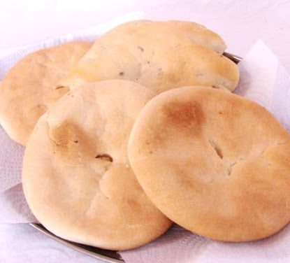

Si hablamos de comida y hacemos referencia a Mendoza, no podemos dejar de lado la infaltable "tortita raspada", una comida
que no puede faltar como acompañante para todo momento, ya se con una bebida caliente, va bien con el mate, el té e incluso sola. A continuación
vamos a aprender como hacer las famosas tortitas raspadas mendocinas para poder tener un acompañante sólido en todas nuestras bebidas para todo momento
del día sin tantos rodeos.
¿Cómo hacer las famosas tortitas?

Ingredientes
Para hacer éstas clásicas tortitas mendocinas, necesitamos de muy pocos ingredientes. Los cuales son: